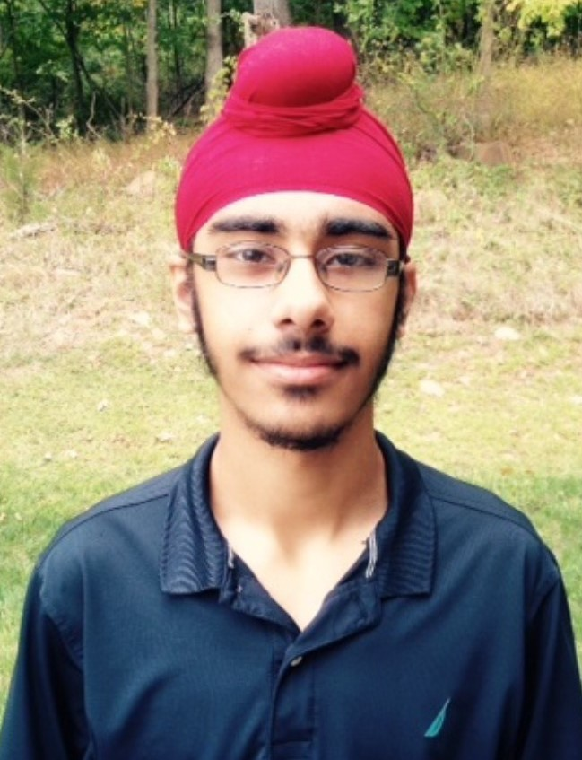

Filler words come here
Our Team
Ethan Mak

Ethan Mak is a rising junior in Millburn High School in NJ. He loves coding and tinkering with electronics, especially disassembling other devices. When he isn't with electronics, he likes debating and talking about current events, swimming, running, and playing the violin. Ethan helped all around by coding and building the robot as well as making the poster and website
Sonia Purohit
Sonia is going into her junior year at the Academy of Sciences in Bridgewater, NJ. She loves software programming and teaching robotics. While debugging can sometimes be frustrating, she enjoys the structured problem solving aspect of robotics. She also enjoys playing the piano and is a varsity track runner and soccer player.
Jagdeep Bhatia
Jagdeep is a rising Sophomore at Watchung Hills Regional High School who has a deep love for math and computer science. In his free time, Jagdeep enjoys running cross country, making video games in Javascript, and playing the tabla, an Indian musical instrument. For this project, Jagdeep was in charge of designing the robot. He used a combination of Lego pieces and 3d printed parts to construct the chassis of the robot.
Mehal Kashyap

Mehal is going to be a junior in high school in the fall of 2017. She loves anything and everything related to learning, whether it be math, chemistry, writing, or computer science. When she is not doing robotics or school work, Mehal enjoys dancing, reading, and spending time with her friends and family. Mehal helped with the project by wiring and coding for the evac mechanism.
Our Mentors
Elizabeth Mabrey

Dennis Mabrey

Dennis Mabrey has thirty years of system and application level software engineering experience. He was a software developer on the FBI's CODIS project and a Principal Architect for Microsoft Consulting Services. He has consulted for numerous Fortune 500 companies, large accounting firms, and the NASDAQ stock exchange. Dennis has a great passion for just about anything challenging in the computer industry. Dennis received B.S. in Computer Science from the University of Delaware.
Hybrid
Why we chose it
We found that the NXT Brick, while fairly versatileMechanism
Evacuation Mechanism
Drivetrain
Linetracing Mechanism
I2C Hybrid

Overall Structure

This code was developed as separate modules in order to deal with all cases. Each module was dedicated to a certain purpose on the field such as avoiding the obstacle or tracing the line. This allowed us to develop faster with multiple people and isolate problems when they arose.
We divided our code into the following modules
- Linetracing
- Obstacle Avoidance
- Evacuation Room
Linetracing
In order to better maintain our linetracing code, we effectively split into into two parts, normal linetracing and exceptions. These exceptions include gaps and intersections with or without green. For these, we defined specific subprocesses to deal with them. For all other tiles, we handed control to normal linetracing where we used light array PID for navigation.
Light Array PID


Exceptions
Black Intersections

Green Intersections

Obstacle Avoidance
Ramp Negotiation

Evacuation Room


Storming Robots is an institution started by Elizabeth and Dennis Mabrey geared toward creating a generation that is c
Ethan Mak